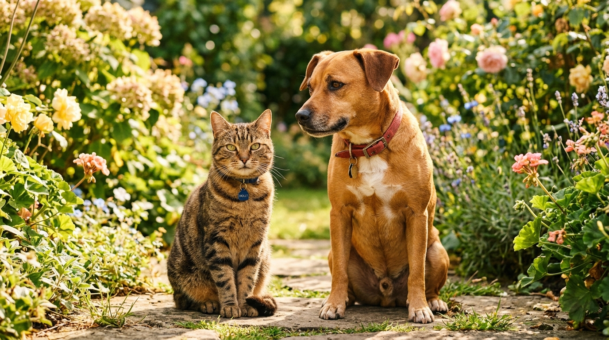
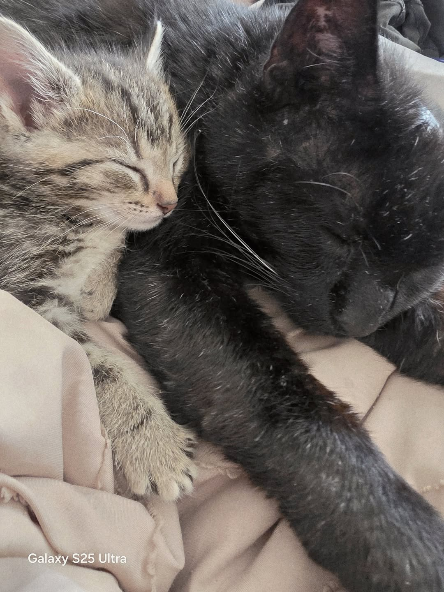

"We are the voice for the voiceless."
Veteran-operated, no-kill rescue for cats and dogs in Hohenwald and Lewis County, Tennessee. Volunteer rescue since 2018, providing medical rehabilitation, foster care, adoptions, and TNR assistance to animals in greatest immediate need.
Adopt a Pet
Find your new family companion. Browse vetted cats and dogs ready for loving homes in Middle TN.
Find a PetBecome a Foster
Open your heart and home temporarily. We provide all food, supplies, and medical care needed.
Learn to FosterMake a Donation
100% of donations fund emergency medical care, food, spay/neuter, and rescue operations.
Ways to GiveSpay / Neuter & TNR
Low-cost spay/neuter assistance and community cat Trap-Neuter-Release in Lewis County.
TNR & Spay InfoFuel Life-Saving Rescue Work
Every dollar directly supports medical care, parasite treatments, spay/neuter, and food for rescued animals in Hohenwald, TN.
Meet Our Adoptable Animals
Each animal comes fully vetted, spayed or neutered, and microchipped. Animals in greatest immediate need always take priority.
Healing Now
Stories of resilience and recovery in our Hohenwald rescue family.

Ravenclaw, healing in Hohenwald.
Ravenclaw
Ravenclaw is a resilient senior cat who survived being set on fire in Hohenwald. He is still healing and thriving. August marks one year in recovery. He still has a way to go. His progress is inspiring. He has a loyal companion in little Buddy, and they support each other.
Simple Ways to Support Kit Kat Alley Rescue
We accept direct donations via Venmo, PayPal, Zelle, and checks. All donations are tax-deductible to the extent allowed by law.
Venmo
Send direct tax-deductible contributions to our official Venmo handle:
@Kitkatalleyrescue
Open VenmoPayPal
Support medical intake and rescue supplies directly via PayPal:
kitkatalleyrescue@yahoo.com
PayPal DetailsZelle
Send instant donations with zero transaction fees via Zelle recipient:
kitkatalleyrescue@yahoo.com
Zelle Details